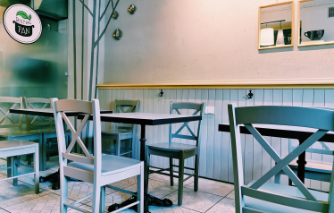

02 / MAŽASIS PAN PASAULIS
Jūsų vieta
miesto ritme.
Maža kavinė dideliame mieste – greitai pietų pertraukai ir lėtam pokalbiui prie stalo.
T. Kosciuškos gatvėje įsikūręs „Bistro PAN“ savo virtuvę skiria daržovėms. Čia ruošiami vegetariški ir veganiški patiekalai, o greta jų – itališkos „Scrocchiarella“ storapadės picos.
Nuo burokėlių karpačio ir humuso iki lazanijos, batatų gratino ar aguonų pyrago. Pietums rinkitės sriubą ir šiltą patiekalą, o dalintis – mėgstamą picą.
Atraskite mus Vilniuje ↗